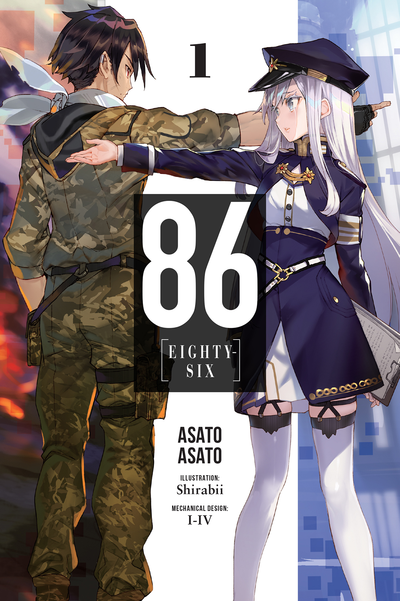
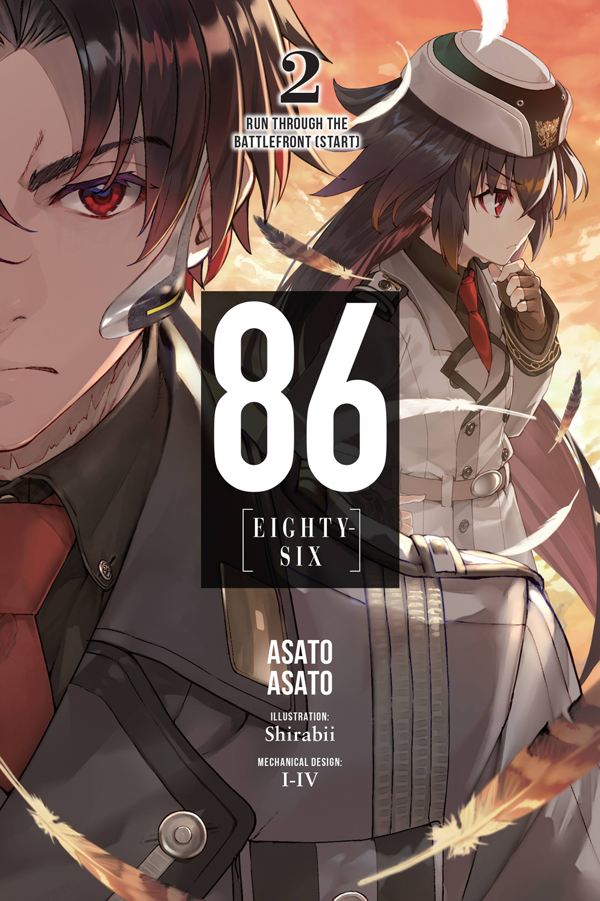
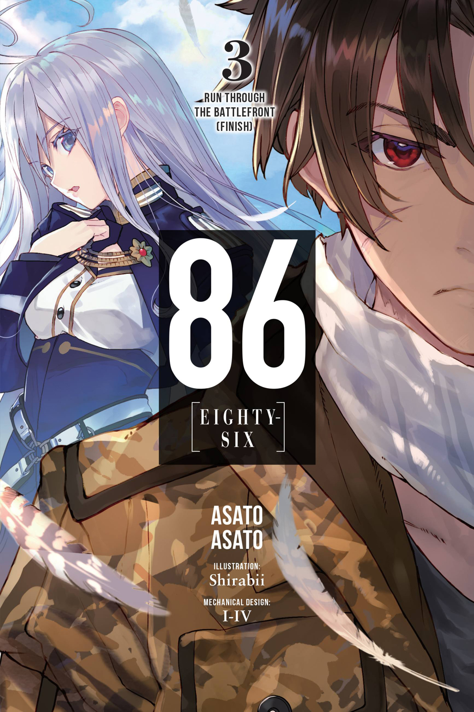

86 [ Eighty-Six ] Light Novels
"I feel it is a betrayal of ideals to have you fight, be sacrificed, and not acknowledging you,
let alone not trying to understand you well… it is unforgivable, I feel."
- Vladilena Milizé
Volume 1: 86 Eighty-six
A War Without Casualties The Republic of San Magnolia has long been under attack from the neighboring Giadian Empire's army of unmanned drones known as the Legion. After years of painstaking research, the Republic finally developed autonomous drones of their own, turning the one-sided struggle into a war without casualties-or at least, that's what the government claims. In truth, there is no such thing as a bloodless war. Beyond the fortified walls protecting the eighty-five Republic territories lies the "nonexistent" Eighty-Sixth Sector. The young men and women of this forsaken land are branded the Eighty-Six and, stripped of their humanity, pilot the "unmanned" weapons into battle...
Volume 2: Run Through the Battlefront I
Let’s go back to where we belong Having bid Lena farewell, Shin and the surviving members of the Spearhead squadron continue into the heart of Legion territory. There, they endure countless hardships until they’re rescued by the Federal Republic of Giad, a reformed nation that offers them a second chance at a peaceful life. But it isn’t long before a sense of duty calls the Eighty-Six back to the battlefield. Choosing to enlist in the military, they willingly walk back through the gates of hell, this time joined by a peculiar new ally-Frederica Rosenfort: a haughty young girl with a rare ability and wisdom far beyond her years.
Volume 3: Run Through the Battlefront II
Pride is all we have. The attack Shin foresaw has finally come to pass. Wielding a weapon with destructive force hitherto unseen, the Long-Range Artillery-type Legion unit rains unmitigated chaos over the battlefield. Both the Federacy’s western front and the Gran Mur of the Republic crumble under the might of the monolithic railgun, capable of dealing catastrophic damage from hundreds of kilometers away. With their backs against the wall, the Giadian military makes a controversial decision: A special strike force will charge into the heart of Legion territory, engage the Railgun type from close range, and destroy it. Shin and the Eighty-Six will spearhead the operation. …But Shin has not been himself lately. Having defeated his brother’s ghost and freed himself from the Republic, the Reaper finds himself without purpose. What reason does he have to go on living? For whose sake does he fight…?
Volume 4: Under Pressure
OLD FRIENDS, NEW ENEMIES Against all odds, Shin and the Eighty-Six have emerged victorious from their battle with the Morpho, liberating scores of surviving Republic promise and finally caught up to the Spearhead squadron. And while her citizens from the Legion’s dark agenda. Lena, in turn, has fulfilled her presence has brought out a softer side in Shin, it seems to have roused to an end when the Eighty-Sixth Strike Package, with Lena at the helm, the competitive spirits within Kurena and Frederica. But the fun comes in the Republic’s northern secondary capital, Charité. Deep underground, receives its first mission. Their destination: an abandoned subway tunnel the gaping maw of a subterranean Legion base awaits them...